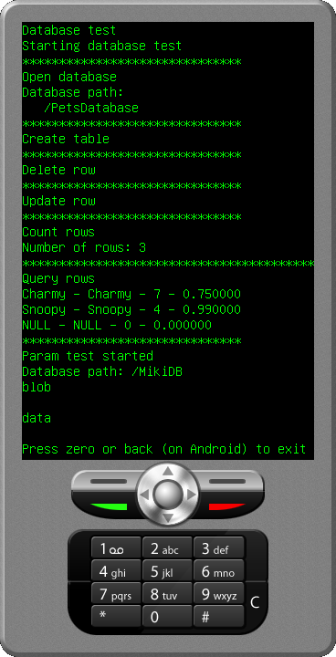

This example application demonstrates how to use the MoSync Database API. The example works on all platforms supported by the API: Android, iOS, and the MoSync MoRE emulator.
|  |
| DatabaseTest Screenshot (MoSync Emulator) |
The project consists of one source file, main.cpp, which contains commented code to help understand the Database API. The example database used has a table called "pet" which contains data about pets. The database is created by the program. The tests made include making queries and checking that the results match the expected values.